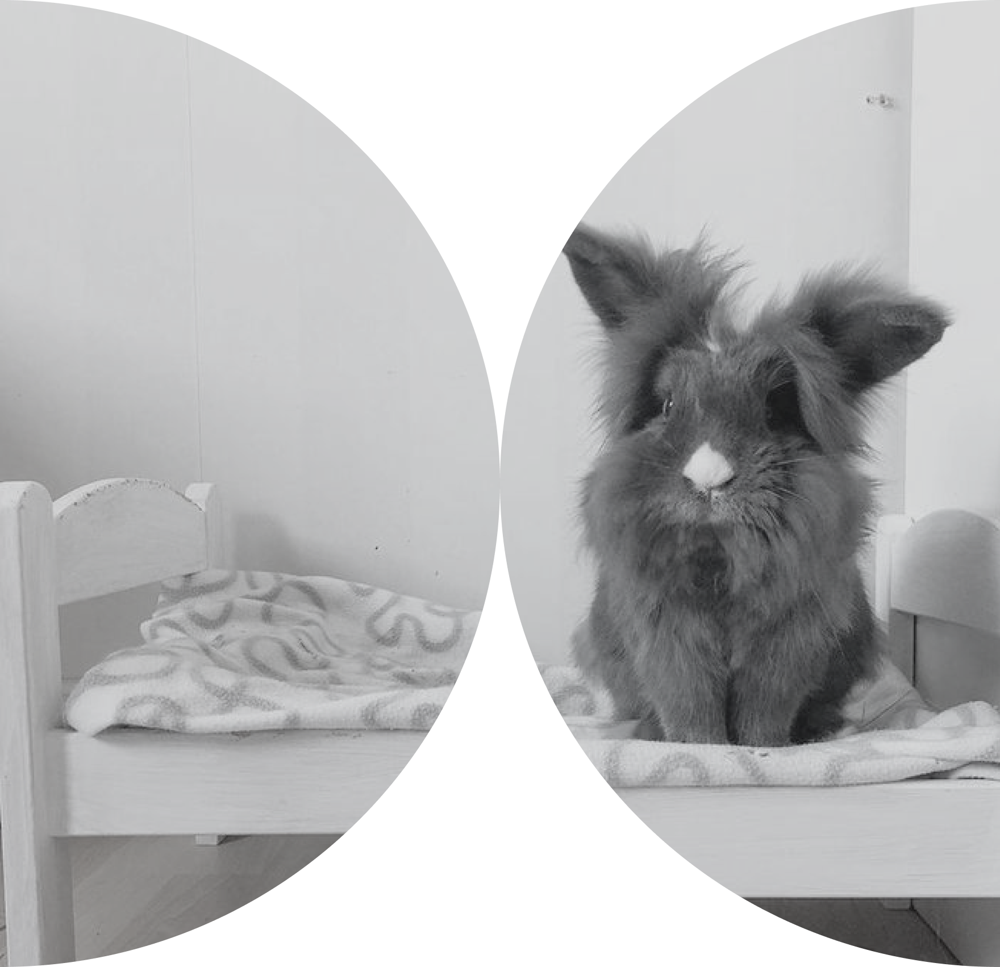

BLANKETS
FOR BUNNIES
* No sewing experience needed!
Drop by whenever you can!( 1 blanket = aprx. 30min)
Right outside the lobby on the right!
WED OCT 21
9AM — 12PM
ROOM 1004
BUILDING 87
Help make rescue rabbits a little cozier this winter! Join us for a drop-in volunteer event to make fleece tie blankets for Rabbit Haven, a volunteer-run rabbit rescue and adoption center in Gig Harbor, WA, providing shelter, medical care, and individual attention to abandoned and surrendered domestic rabbits, including special-needs rabbits and lifelong residents.